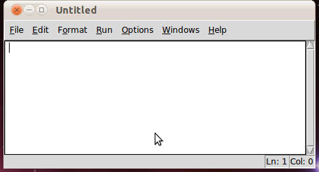
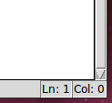
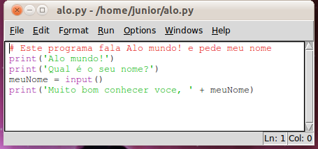
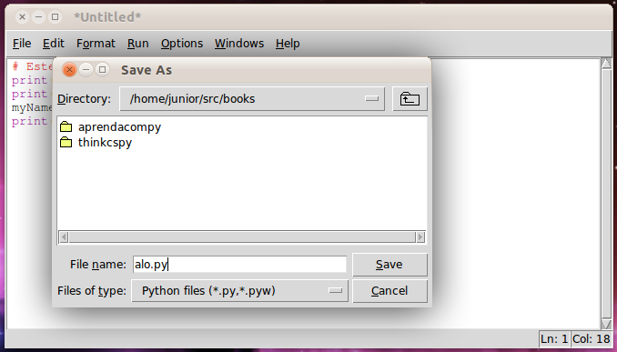
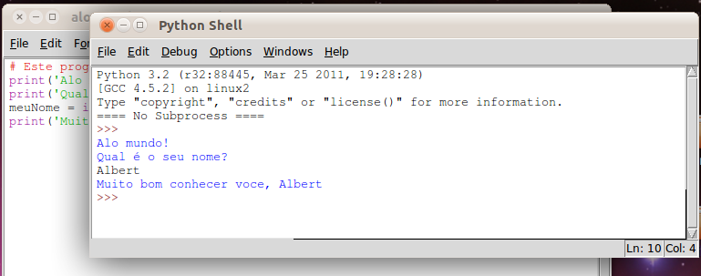

print()
input()
Chega de inteiros e matemática por enquanto. Python é muito mais do que uma calculadora. Agora, vamos ver o que Python pode fazer com texto. Neste capítulo, iremos aprender como armazenar texto em variáveis, combinar texto, e mostrar texto na tela. Muitos de nossos programas irão utilizar texto para apresentar nossos jogos para o jogador, e este, por sua vez, irá digitar texto para nossos programas através do teclado. Iremos, também, criar o nosso primeiro programa, que saúda o usuário com o texto "Alô Mundo!" e solicita ao usuário o seu nome.
Em Python, trabalhamos com pequenos trechos de texto chamados de strings. Nós podemos armazenar strings em variáveis assim como podemos armazenar números dentro de variáveis. Quando nós digitamos strings, colocamos elas entre duas aspas (') simples, assim como:
>>> spam = 'hello' >>>
As aspas simples estão ali somente para informar ao computador onde a string começa e onde ela termina (e não são parte do conteúdo da string em si).
Agora, se você digitar spam no console interativo, você deve ver o conteúdo
da variável spam (a string 'hello'). Isso porque Python irá interpretar
a variável como o valor armazenado dentro dela (neste caso, a string
'hello').
>>> spam = 'hello' >>> spam 'hello' >>>
Strings podem conter quase que qualquer caracter do teclado. (Strings não podem conter aspas simples dentro delas sem a utilização de caracteres de escape. Caracteres de escape serão descritos mais tarde .) Abaixo, temos alguns exemplos de strings:
'hello' 'Hi there!' 'KITTENS' '7 apples, 14 oranges, 3 lemons' 'Anything not pertaining to elephants is irrelephant.' 'A long time ago in a galaxy far, far away...' 'O*&#wY%*&OCfsdYO*&gfC%YO*&%3yc8r2'
Assim como fizemos com valores numéricos no capítulo anterior, com strings nós também podemos combinar valores com operadores para formar expressões.
Você pode adicionar uma string ao final de outra utilizando o operador +,
que é chamado de concatenação de strings. Experimente digitar ``'Alô' +
'Mundo!'`` no console:
>>> 'Alô' + 'Mundo!' 'AlôMundo!' >>>
Para manter as duas palavras em separado, coloque um espaço no final da string
'Alô', antes da aspa simples, como o exemplo:
>>> 'Alô ' + 'Mundo!' 'Alô Mundo!' >>>
O operador + trabalha de forma diferente com strings e com inteiros, pois
eles são tipos de dados diferentes. Todos os valores possuem um tipo de
dados. O tipo de dados do valor 'Alô' é string. O tipo de dados do valor 5 é
inteiro. O tipo de um dado informa a nós (e ao computador) qual o tipo de dados
de um determinado valor.
Até agora, nós digitávemos as instruções, uma por vez, no console interativo. Quando escrevemos programas, nós digitamos muitas instruções e executamos todas elas de uma só vez. Vamos escrever o nosso primeiro programa!
O programa que fornece o console interativo é chamado IDLE, o ambiente de desenvolvimento interativo (Interactive DeveLopment Environment). O IDLE possui uma outra parte chamada de editor de arquivos.
Clique no menu Arquivo no topo da janela do Console Python, e selecione Nova Janela. Uma nova janela em branco irá aparecer para que nós digitemos nosso programa dentro. Essa janela é o editor de arquivos.

Figura 3-1: A janela do editor de arquivos
Uma tradição para programadores aprendendo uma nova linguagem é fazer seu
primeiro programa mostrar o texto "Alô mundo!" na tela. Nós iremos criar nosso
próprio programa Alô mundo! agora.
Quando você digitar seu programa, não digite os números que aparecem do lado esquerdo do código. Eles estão ali para que possamos nos referir a cada linha do código pelo número, para facilitar a explicação. Se você olhar no canto inferior direito da janela do editor de arquivos, verá que o editor está lhe mostrando em qual linha o cursor está atualmente.

Figura 3-2: O canto inferior direito da janela do editor de arquivos mostra onde o cursor está. O cursor está atualmente na linha 12.
Digite o texto a seguir em uma janela nova do editor de arquivos. Nós chamamos esse texto de código-fonte do programa, pois ele contem as instruções que Python irá seguir para determinar exatamente como o programa deverá se comportar. (Lembre, não digite a numeração de linhas!)
NOTA IMPORTANTE! O programa a seguir deve ser executado pelo intepretador Python 3, não Python 2.6 (ou qualquer outra versão 2.x). Certifique-se de que você possui a versão correta do Python instalada. (Se você já possui Python 2 instalado, você pode ter Python 3 instalado concomitantemente.) Para baixar o Python 3, vá até python.org/download/releases/3.1.1/ e instale essa versão.
alo.py
1. # Este programa fala Alô mundo! e pede meu nome
2. print('Alô mundo!')
3. print('Qual é o seu nome?')
4. meuNome = input()
5. print('Muito bom conhecer você, ' + meuNome)
O IDLE dá diferentes cores aos diferentes tipos de instruções. Depois que você terminar de digitar esse código, a janela deverá se parecer com o seguinte:

Figura 3-3: A janela do editor de arquivos se parecerá com isso depois que você digitar o código.

Figura 3-4: Salvando o programa.
Após ter digitado seu código-fonte, salve-o, de forma que você não precise reescrever ele a cada vez que inicia o IDLE. Para isso, escolha o menu "Arquivo" no topo da janela do Editor de Arquivos, e então clique em "Salvar Como". A janela Salvar Como deverá ser aberta. Digite alo.py na caixa "Nome do Arquivo" e clique em "Salvar". (Veja a Figura 3-4.)
Você deve salvar os seus programas de tempos em tempos, enquanto os escreve. Dessa forma, se o computador travar ou se você sair do IDLE sem querer, você perderá somente o texo que você digitou após o último salvamento. Utilize o atalho Ctrl-S para salvar seus programas rapidamente, sem precisar utilizar o mouse.
Um tutorial, em vídeo, sobre como usar o editor de arquivos está disponível no website deste livro em: http://inventwithpython.com/videos/.
Se você receber um erro que parece com isso:
Alô mundo! Qual é o seu nome? Albert Traceback (most recent call last): File "C:/Python26/alo.py", line 4, in <module> myName = input() File "<string>", line 1, in <module> NameError: name 'Albert' is not defined
... significa que você está executando o programa com Python 2, ao invés de Python 3. Você pode escolher entre instalar Python 3, ou converter o código-fonte deste livro para Python 2. O Apêndice A lista as diferenças entre Python 2 e 3 que você precisa conhecer para utilizar este livro.
Para abrir um programa salvo anteriormente, clique em Arquivo > Abrir. Faça
isso, e na janela que abrir, escolha alo.py e clique o botão Abrir. Seu
programa alo.py deverá ser aberto na janela do editor de arquivos.
Agora é hora de rodar nosso programa. Clique Executar > Executar módulo, ou apenas pressione a tecla F5 do seu teclado. Seu programa seré executado na janela do console que apareceu quando você iniciou o IDLE. Lembre, você deve pressionar F5 na janela do editor de arquivos, não na janela do console interativo.
Quando o seu programa pergunta seu nome, vá em frente e digite ele, como mostra a Figura 3-5:

Figura 3-5: O console interativo quando executamos o programa "Alô Mundo".
Quando você pressionar Enter, o programa deverá cumprimentar você (o usuário) pelo nome. Parabéns! Você escreveu seu primeiro programa. Agora você pode ser considerado um programador iniciante. (Você pode rodar este programa novamente pressionando a tecla F5.)
Como funciona esse programa? Bem, cada linha que digitamos é uma instrução para o computador que é interpretada pelo Python de um jeito que o computador irá entender. Um programa de computador é muito parecido com uma receita. Faça primeiro o primeiro passo, depois o segundo, e assim por diante até chegar ao final. Cada instrução é seguida em sequência, iniciando pelo topo do programa e descendo pela lista de instruções. Depois que o programa executa a primeira linha de instruções, ele move e executa a segunda linha, depois a terceira, e assim por diante.
Este passo a passo que o programa segue é chamado de fluxo de execução, ou somente execução.
Agora vamos dar uma olhada em nosso programa, linha por linha, para ver o que ele está fazendo, começando pela linha 1.
1. # Este programa fala Alô mundo! e pede meu nome
Essa linha é chamada de comentário. Qualquer texto que vier precedido de um sinal # (chamado de cerquilha) é um comentário. Comentários não são feitos para o computador, mas para você, o programador. O computador os ignora. Eles são utilizados para lembrar você do que o programa faz ou para informar a outras pessoas que virem seu código fonte sobre o que o seu código está tentando fazer.
Programadores usualmente colocam um comentário no topo dos seus códigos para dar um título aos seus programas. O IDLE mostra os comentários em vermelho para ajudá-los a se destacarem.
Uma função é tipo um mini-programa dentro de seu programa. Ela contém linhas
de código que são executadas de cima para baixo. Python nos oferece algumas
funções embutidas (built-in) que nós podemos utilizar em nossos programas. O
mais legal sobre funções é que nós somente precisamos saber o que a função faz,
mas não como ela faz isso. (Você precisa saber que a função print() mostra
um texto na tela, mas você não precisa saber como ela faz isso.)
Uma chamada de função é um pedaço de código que informa ao nosso programa
para executar o código de dentro de uma função. Por exemplo, seu programa pode
chamar a função print() toda vez que você quiser mostrar uma string na tela.
A função print() recebe como entrada a string que você digitar entre
parênteses e mostra o texto na tela. Como queremos mostrar Alô mundo! na
tela, nós escrevemos o nome da função print, seguido de um abre-parênteses,
seguido pela string 'Alô mundo' e um fecha-parênteses.
2. print('Alô mundo!')
3. print('Qual é o seu nome?')
A linha 2 mostra uma chamada a função print, comumente escrita como
print() (com a string a ser mostrada na tela dentro dos parênteses).
Nós adicionamos parênteses ao final de nomes de funções para deixar claro que
nós estamos nos referindo a uma função chamada print(), não a uma variável
chamada print. Os parênteses ao final da função nos informam que estamos
lidando com uma função, assim como as aspas ao redor do número '42' nos
informam que estamos lidando com a string '42' e não com o inteiro 42.
A linha 3 é outra chamada a função print(). Agora, o programa mostra
"Qual é o seu nome?".
4. meuNome = input()
Esta linha possui uma atribuição com uma variável (meuNome) e uma chamada de
função (input()). Quando input() é chamada, o programa aguarda por
entrada do usuário. A string que o usuário digitar (seu nome) se torna o valor
de saída da função.
Assim como expressões, chamadas de funções são interpretadas como um único
valor. O valor que é interpretado como a chamada a função é chamado de
valor de retorno.
(Na verdade, nós podemos utilizar a palavra "retorna" com o
mesmo significado que "é interpretada".) Nesse caso, o valor de retorno de
input() é a string que o usuário digitar como seu nome. Se o usuário digitou
Albert, a chamada de função input() retorna a string 'Albert'.
A função chamada input() não necessita entrada alguma (diferentemente da
função print()), que é o motivo de não termos nada entre parênteses.
5. print('Muito bom conhecer você, ' + meuNome)
Na última linha do programa nós temos novamente a função print(). Dessa vez,
nós usamos o operador mais (+) para concatenar a string
Muito bom conhecer você, e a string armazenada na variável meuNome,
que é o nome que nosso
usuário digitou quando o programa solicitou. É assim que nós fazemos com que o
programa nos cumprimente pelo nome.
Após executar a última linha, o programa para. Nesse ponto ele terminou e todas
as variáveis do programa são esquecidas pelo computador, incluindo a string que
armazenamos em meuNome. Se você experimentar executar o programa novamente,
com um nome diferente, como Carolyn, ele irá pensar que esse é o seu nome.
Alô mundo! Qual é o seu nome? Carolyn Muito bom conhecer você, Carolyn
Lembre, o computador faz exatamente o que você programou ele para fazer. Neste
caso, nosso primeiro programa, ele é programado para perguntar seu nome,
permitir que você digite uma string, e então falar Alô e mostrar a string
que você digitou.
Mas computadores são burros. O programa não está nem aí se você forneceu como seu nome o nome de outra pessoa, ou então algo idiota. Você pode digitar o que quiser e o computador irá tratar da mesma forma:
Alô mundo! Qual é o seu nome? cocô Muito bom conhecer você, cocô
O computador não se importa com a forma que você nomeia suas variáveis, mas você
deveria. Se dermos nomes de variáveis que reflitam qual tipo de dados que elas
contém, estaremos tornando mais fácil o entendimento de o que o nosso programa
faz. Ao invés de meuNome, poderíamos ter chamado esta variável de
abrahamLincoln ou mEuNoMe. O computador irá sempre executar o programa
da mesma forma (desde que você use consistentemente abrahamLincoln ou
mEuNoMe).
Nomes de variáveis (assim como tudo em Python) são case-sensitive.
Case-sensitive significa que um mesmo nome de variável em maiúsculas e
minúsculas representam variáveis completamente diferentes. Assim, spam,
SPAM, Spam, e sPAM são consideradas quatro variáveis diferentes em
Python. Cada uma pode conter seus valores individuais.
Não é uma boa idéia ter variáveis com mesmo nome, com diferenças apenas no
tamanho das letras que compõem o nome das variáveis (se são maiúsculas ou
minúsculas) em seu programa. Se você armazena seu primeiro nome na variável
nome e seu último nome na variável NOME, seria bem confuso entender o
código algumas semanas após você tê-lo escrito. nome significa primeiro e
NOME significa último nome, ou o contrário?
Se, sem querer, você trocar as variáveis nome e NOME, seu programa
continuará rodando (isto é, não terá erros de sintaxe), mas irá rodar de forma
incorreta. Este tipo de falha no seu código é chamado de bug. É muito
comum criar bugs em seus programas, sem querer, enquanto você os escreve. É
por isso que é importante que os nomes de variáveis que você escolhe façam
sentido.
Algo que também ajuda é escrever nomes de variáveis com letras maiúsculas, se
elas incluem mais de uma palavra. Se você armazena uma string que contém o que
você comeu no cafá da manhã em uma variável, o nome
oQueEuComiNoCafeDaManhaHoje é muito mais fácil de ler do que
oqueeucominocafedamanhahoje. Isto é uma convenção (isto é, um forma
opcional, mas padronizada de fazer as coisas) para programas escritos em Python.
(Embora fosse melhor ter um nome mais simples, como cafeDeHoje.) Escrever a
primeira letra de cada palavra com letra maiúscula em nomes de variáveis faz com
que o nosso programa se torne mais legível.
Agora que aprendemos a lidar com texto, nós podemos começar a fazer programas
com os quais o usuário possa interagir. Isso é importante porque o texto é a
principal forma de comunicação entre o usuário e o computador. O jogador irá
digitar texto para nossos programas através do teclado, com a função
input(). E o computador irá mostrar texto na tela quando a função
print() é executada.
Strings são apenas um tipo de dados que podemos utilizar em nossos programas.
Nós podemos usar o operador + para juntar strings (concatenar). Usar o
operador + para concatenar duas strings para formar uma nova string é como
usar o operador + para somar dois inteiros para formar um novo inteiro (a
soma).
No próximo capítulo, iremos aprender mais sobre variáveis, de forma que nosso programa irá armazenar e lembrar de textos e números que o usuário fornecer para o programa. Após aprendermos a utilizar texto, números, e variáveis, estaremos prontos para começar a criar jogos.